My line the synth's own 16 steps: click a step to write a note there, drag right to hold it, click it again to take it out, right-click for how hard. It moves with each chord through the key's scale (or stays on the key's notes).
The band
Feel and flow
Mix
Effects
The FM-1's keys (for soloing)
On the FM-1
32 places for your jams. Save here stores the jam that is playing.
On this computer
Kept in this browser, and as files you can share: as many as you like.
Factory jams
The user kit
One sample a drum. Drop a WAV on a drum, or press its Choose. A drum left empty plays the STUDIO kit's. On the FM-1: ENV → SOUNDS → KIT: USER. Bright drums (hats, cymbals, percussion) are kept as 8-bit mu-law, which never hisses; the others as ADPCM, which holds twice as long.
The FM-1's screen
Connect the FM-1: its screen shows here, pixel for pixel.
1 · Start in a minute
- Press PLAY. The band starts: drums, bass, chords and a synth line. Press PLAY again to stop.
- Turn PRESETS to look through the jams, sorted by genre. Stop turning, and 2.5 seconds later the jam under the cursor starts at the next bar.
- Press SEQ to switch from part A (think: verse) to part B (chorus). The band plays a fill and changes at the end of the round.
- Play on the keys. The lit keys are the notes that fit: bright for the chord playing now, dim for the rest of the scale. Any dim or bright key sounds good.
- Press ARP for a brand-new jam in the same genre. Didn't like it? Press OCT- and OCT+ together to undo.
- Press SAVE twice to keep it.
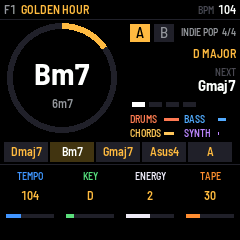
No FM-1 to hand? The emulator runs the very same firmware in your browser, keys and all.
2 · The FM-1 at a glance
pages transport actions C: chord number 1 on EDIT 1–4 / 1–5: the performance keys (FX held)
Buttons: tap, and hold
| Button | Tap | Hold |
|---|---|---|
| PLAY | Start or stop the band. | — |
| SEQ | Switch part A ↔ B. The change comes at the end of the round, with a fill (it blinks while it waits). | A fill right now. |
| REC | Tap the tempo: tap it a few times in time. It flashes on every beat. | Back to the top of the part, at the next bar. |
| ARP | Generate: a new jam on PLAY, new chords on EDIT, new grooves on LFO, new sounds on ENV, a new line on MY LINE. | A whole new jam, from any page. |
| SEL | Choose which part (A or B) EDIT and PART work on. | Hold SEL + press a key: the jam moves to that key. Hold SEL + turn SELECT: the keys' sound. |
| SAVE | Open the save list (it lights up when the jam has unsaved changes). SAVE again saves. | — |
| HOME | The PLAY page. | What the page you're on does, in three lines. |
| EDIT · ENV · LFO · FX · GLO | Open that group of pages; press again for its next page. | FX held + keys: mutes, fills, a break (below). |
| OCT- + OCT+ | Pressed together: undo the last generate or load. On their own they move the keys an octave (and do special jobs on EDIT, MY LINE and in lists). | |
3 · The PLAY screen
- Where the jam lives and its name. F1 is factory jam 1, U05 would be your place 5. An orange dot after the name means it has changes you haven't saved.
- The tempo in BPM. It reads EXT while a loop pedal or computer sets the tempo.
- The chord playing now, with its number in the key underneath (6m7). The ring fills up as the chord plays, so you can see the next change coming.
- Part A or B, the genre and the time signature.
- The key and scale: D MAJOR.
- The next chord.
- The four players: drums, bass, chords and synth, each bar moving as it plays. A muted player is greyed out.
- The progression of the part playing, the current chord lit.
- The four knobs, K1 to K4, in their own colours: here tempo, key, energy and tape. Every page puts its own four settings here.
When the band is stopped, the screen shows the same things without the movement:
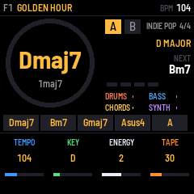
4 · Pages and knobs
Everything you can change lives on a page. Each page has four settings, one for each knob K1–K4, shown at the bottom of the screen in the knob's colour. The pages come in groups, one group per button: press the button to open the group, press it again for the next page in it. The group's button stays lit.
| Button | Pages (press again for the next) |
|---|---|
| HOME | PLAY: tempo, key, energy, tape |
| EDIT | EDIT: the chords of part A or B |
| ENV | SOUNDS → MIX → TONE → REVERB SENDS → OCTAVES |
| LFO | STYLES → MY LINE → FEEL → PART → FLOW |
| FX | EFFECTS |
| GLO | SONG → MIDI → SYSTEM → KEYS → USER KIT |
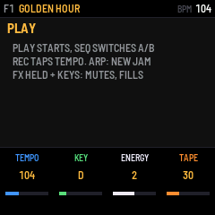
- Lost? Hold HOME for a moment: the screen tells you what the page you're on does.
- Turn faster, go further. Quick turns take bigger steps.
- SELECT is the tempo on most pages. On EDIT it picks the chord, on MY LINE the step.
- Every change is heard straight away, while the band plays.
- The FM-1 remembers the jam you're on, unsaved changes included, when you switch it off (after the band has been stopped for a few seconds). To keep a jam for good, save it.
5 · Choosing a jam
A jam is a whole song: its two parts of chords, the key, the tempo, the players, the sounds, the mix and the effects. JAMTRACK comes with 160 factory jams, ten in each of 16 genres.
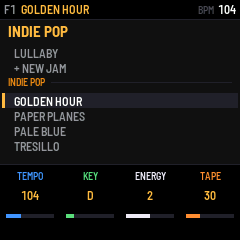
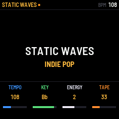
- Turn PRESETS and a list opens on the jam playing. Keep turning: each genre has a heading, then your own jams in that genre, then the factory's, then + NEW JAM, then the next genre.
- Nothing changes while you turn. Stop for 2.5 seconds and the jam under the cursor starts at the next bar; a bar under the list counts down. OCT+ loads it now, OCT- closes the list without changing anything.
- + NEW JAM makes up a brand-new jam in that genre: chords, players and sounds.
- ARP does the same in the jam's own genre. On some pages it only changes part of the jam: new chords on EDIT, new grooves on the LFO pages, new sounds on the ENV pages. Hold ARP for a whole new jam from anywhere.
- Undo: OCT- and OCT+ together bring the jam before back (and pressing them again swaps back).
6 · Writing chords
Each jam has two parts, A and B, of 1 to 12 chords each. Press EDIT to see them.
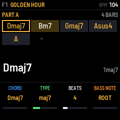
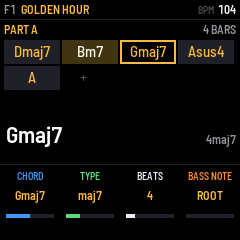
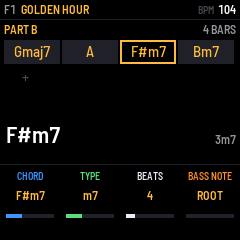
- Turn SELECT to put the cursor on a chord. You hear it when the band is stopped.
- Press a key to choose the chord. The keys are numbered from C: C is chord 1 (the key's home chord), D is 2, E is 3, F is 4, G is 5, A is 6, B is 7. The black keys give the chords from outside the key, like ♭7 or ♭3. This works the same in every key: in D major, C still means "chord 1", which is D.
- OCT+ adds a chord after the cursor (a copy, to change), OCT- removes the cursor's chord.
- SEL switches between part A and part B.
| Knob | What it changes |
|---|---|
| K1 CHORD | Steps through the key's own chords. |
| K2 TYPE | The kind of chord. AUTO lets the scale decide (major or minor), and the jam's COLOR adds 7ths or 9ths. Or pick one: MAJ, m, maj7, m7, 7, sus2, sus4, add9, 9, 6, dim, m7b5 and more (the full list). |
| K3 BEATS | How long the chord lasts, 1 to 16 beats. |
| K4 BASS NOTE | The note in the bass: the chord's ROOT, its 3rd, 5th or 7th, or the key's 1 throughout (a pedal). |
Changing the key or the scale
- Hold SEL and press a key to move the whole jam to that key. The song stays the same, only higher or lower. The KEY knob on PLAY and SONG does the same.
- Change the scale (GLO → SONG, K3) and the chords follow: switch D major to D minor, and Dmaj7 becomes Dm7, Bm7 becomes B♭maj7, and so on, each chord keeping its 7th or 9th. Chords you wrote from outside the key stay as you wrote them. Switch back and it's exactly as before.
- The companion's Jam tab lets you write chords by typing them, too.
7 · The band's sound (ENV)
Five pages for how the band sounds. Press ENV, then ENV again for the next. ARP on these pages picks new sounds for the jam.
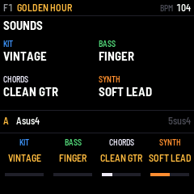
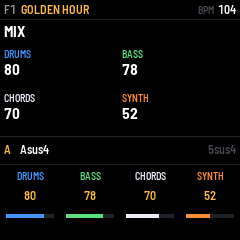
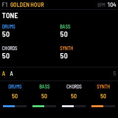
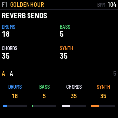
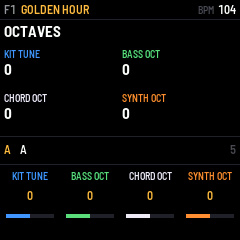
The bass sounds are only offered for the bass, and the chord and synth knobs skip them. There are 10 drum kits and a USER kit of your own samples (GLO → USER KIT).
8 · How the band plays (LFO)
Press LFO for the players' styles, then LFO again for the next page. ARP here picks new styles.
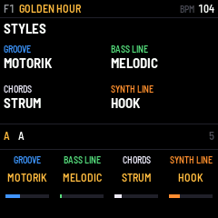
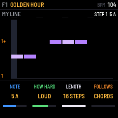
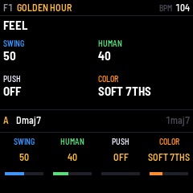
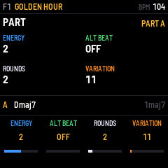
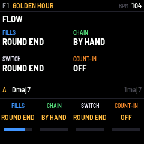
| Setting | What it does |
|---|---|
| SWING | 50 is the groove's own feel. Lower straightens it, higher swings harder. |
| HUMAN | How loose the band plays: 0 is a machine, higher drifts like people do. |
| PUSH | ON: the chords change an eighth note early, as many pop songs do. |
| COLOR | TRIADS, SOFT 7THS, 7THS or 9THS, for the chords left on AUTO. |
| ENERGY | 0 to 4: from a whisper (few drums, long notes) to everything in. |
| ALT BEAT | ON: the drummer plays the groove's second beat in this part. |
| ROUNDS | How many times the part plays before AUTO A/B moves on (1–8). |
| VARIATION | 0–255: another take on the same groove, bass line and synth line. |
| FILLS | A drum fill every 4, 8 or 16 bars, at the end of each round, or none. |
| CHAIN | BY HAND (SEQ switches), AUTO A/B (A, B, A, B… after ROUNDS), or A ONLY. |
| SWITCH | When SEQ's change comes: at the ROUND END or the NEXT BAR. |
| COUNT-IN | OFF, or 1 or 2 bars of clicks before the band comes in. |
9 · MY LINE: your own synth line
Write the synth's part yourself, on a piano roll of up to 16 steps (16th notes: one bar of 4/4). Press LFO twice. If the jam has no line yet, it starts from the jam's own hook, ready to change.
- Turn SELECT to move to a step.
- Press a key to write that note at the step, and hear it. The cursor moves on to the next step, so you can play a line in, one note after another.
- OCT- writes a rest (silence). OCT+ holds the note before it a step longer.
- ARP makes up a new line to start from. OCT- + OCT+ undoes it.
As soon as you change something, the synth plays your line (STYLES shows SYNTH LINE: MY LINE).
| Knob | What it changes |
|---|---|
| K1 NOTE | The step's note, shown as its number in the key and its name ("5 A"). Turn it down past the lowest note for HOLD and REST. |
| K2 HOW HARD | NORMAL, SOFT, LOUD or ACCENT. |
| K3 LENGTH | 1 to 16 steps. A shorter line repeats sooner and drifts against the bar, which can sound great. |
| K4 FOLLOWS | CHORDS: the line moves with each chord, so one line fits the whole song. KEY: it stays where you wrote it. The +SLIDE settings glide from note to note. |
How "follows the chords" works: you write the line over chord 1. When the band moves to chord 4, the whole line moves up to start from 4, through the notes of the key's scale. It always stays in key.
In the companion (Jam tab → My line) the same line is a piano roll you click: click to write a note, drag right to hold it, click a note to remove it, right-click (or alt-click) for how hard. The tools above it set the length, follows and slide, move the line up or down a step, shift it in time, or clear it. A playhead shows the step playing.
10 · Effects and performing (FX)
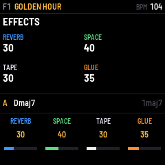
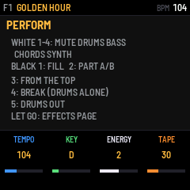
| EFFECTS knob | What it does |
|---|---|
| K1 REVERB | How loud the reverb is. |
| K2 SPACE | How big the room is. |
| K3 TAPE | Old-tape character: a little wobble, warmth and saturation. |
| K4 GLUE | Squeezes the drums together, like a compressor on a drum bus. |
Hold FX and press a key
| Key (from the left) | What it does |
|---|---|
| White 1 · 2 · 3 · 4 | Mute or unmute the drums · bass · chords · synth. |
| Black 1 | A fill. |
| Black 2 | Switch part A ↔ B. |
| Black 3 | Back to the top of the part. |
| Black 4 | A break: the drums alone. Press again to bring everyone back. |
| Black 5 | Drums out, then back in. |
Let go of FX without pressing a key and you land on the EFFECTS page.
11 · Playing along on the keys
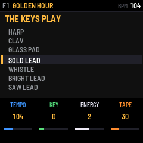
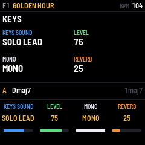
- The keys light up the notes that fit. Bright: the notes of the chord playing now (land on these). Dim: the rest of the scale (good for runs between them). When the band is stopped, only the scale is lit.
- Turn ALGORITHM for another sound. The four leads come first (SOLO LEAD, WHISTLE, BRIGHT LEAD, SAW LEAD), then every other sound. Like PRESETS, it changes 2.5 s after you stop turning (OCT+ now, OCT- never mind).
- OCT- / OCT+ move the keys down or up an octave (two at most each way).
- The keys feel how hard you play them.
- MONO (on the KEYS page) plays one note at a time and slides between them, like a lead synth. POLY plays chords.
- The keys' sound is yours, not the jam's: it stays when you change jams.
12 · Saving, and how much fits
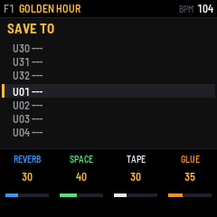
- Press SAVE. The list opens on the jam's own place, or the first empty one.
- Turn SELECT or PRESETS (or press OCT- / OCT+) to choose a place. Empty places show ---.
- Press SAVE again. The screen says SAVED U05 (for example). Any other button cancels.
- Saving over a place replaces the jam that was there.
- While the band plays, the screen says SAVING AT STOP: the FM-1 writes it once you stop, because writing to memory mid-song would make a gap in the sound. Stop the band before you switch off.
- Your saved jams appear in the PRESETS list under their genre, before the factory's.
- To rename or delete a jam, use the companion's Library tab. Names are up to 15 characters: A–Z, 0–9, space and - . '
How much fits
| Where | How many | Notes |
|---|---|---|
| Your places on the FM-1 | 32 jams | U01–U32. Each one is a whole jam: both parts, the players, sounds, mix, effects and MY LINE. Updates keep them. |
| Factory jams | 160 | Built in, ten per genre. You can't overwrite them, but you can change one and save it in one of your places. |
| The jam you're on | 1 | Remembered at switch-off, unsaved changes too (once the band has been stopped a few seconds). |
| The companion's library | about 3,000 jams | Kept in your browser, on that computer. Use Back up all as a file in the Library tab to keep them safe. |
| Jam files | no limit | Each jam can be saved as a small .jam.json file to keep or share. |
| The user kit | 9 drums | One sample each: kick, snare, rim, hat, open hat, ride, crash, tom, perc. Up to 1.8–2.9 s per drum, sharing 48 blocks of memory: nine half-second hits use about 33 of them. |
| Your settings | 1 set | MIDI, the keys' sound, stop mode, click and output: the FM-1's own, the same for every jam. |
13 · Song, MIDI and system settings (GLO)
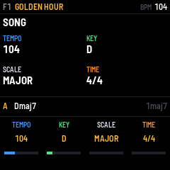
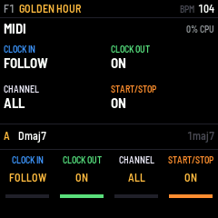
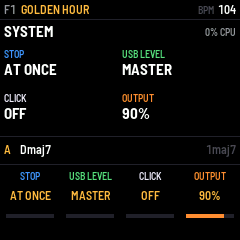
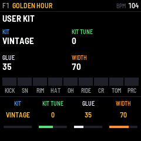
| Setting | What it does |
|---|---|
| SCALE | MAJOR, MINOR, DORIAN, MIXOLYDIAN, LYDIAN, PHRYGIAN or HARM MINOR. The chords follow (see Writing chords). |
| TIME | 4/4, 3/4, 6/8, 12/8, 2/4, 5/4 or 7/8. Every groove plays in all of them. |
| CLOCK IN | FOLLOW: when a MIDI clock comes in, the band follows its tempo. IGNORE: it keeps its own. |
| CLOCK OUT | ON: the FM-1 sends its tempo to a computer over USB. |
| CHANNEL | The MIDI channel it listens to: ALL, or 1–16. |
| START/STOP | ON: MIDI start and stop messages start and stop the band. |
| STOP | AT ONCE, or BAR END: the band plays to the end of the bar and finishes on a last hit. |
| USB LEVEL | How loud the FM-1 comes into your computer over USB. MASTER (all the way down): it follows the MASTER knob, as the speaker does. Turn it up for a level of its own (1–100, starting at 80): the recording stays the same however you set MASTER for your headphones. Also in the companion's Jam tab, beside the keys' sound. |
| CLICK | A metronome click with the band. |
| OUTPUT | The loudest the FM-1 gets, 50–100 %. Lower it if your amp or headphones distort. |
| USER KIT | Choose KIT: USER to hear your samples. KIT TUNE, GLUE and WIDTH (stereo spread) shape them. The samples come from the companion's User kit tab; a drum with no sample plays the STUDIO kit's. |
14 · With a loop pedal
Connect the pedal's MIDI out to the FM-1's MIDI in (the 3.5 mm TRS jack, or USB through a computer). Set the pedal to send MIDI clock and START/STOP. Then:
- JAMTRACK follows the pedal's tempo whenever its clock runs (the screen shows EXT instead of BPM).
- The pedal's START starts the band on its first clock tick, which is the downbeat. Its STOP stops the band.
- Record a loop at the pedal's tempo, then start the band from the pedal: they play in time, every round.
- No clock from your pedal? Tap the tempo with REC (or a footswitch on CC 83) while you play.
GLO → MIDI: CLOCK IN (FOLLOW or IGNORE), CLOCK OUT over USB, the CHANNEL, START/STOP from MIDI.
15 · MIDI control (footswitches)
| CC | does | CC | does |
|---|---|---|---|
| 80 | play / stop | 88–91 | mute drums, bass, chords, synth (toggle) |
| 81 | part A / B | 92 / 93 | part A / part B |
| 82 | fill | 24–27 | mute drums, bass, chords, synth (held: 127 on, 0 off) |
| 83 | tap tempo | 20–23 | level of drums, bass, chords, synth |
| 84 | from the top | 1 | energy of the part |
| 85 / 86 | next / previous jam | PC n | jam n (0–31 yours, 32 on the factory's) |
| 87 | stop (with the ending, if STOP says BAR END) | notes | played on the keys' sound |
A footswitch's press (value 64 or more after less) acts; its release does nothing.
16 · The companion app
This page. Open it in Chrome, Edge or Opera on a computer, plug the FM-1 in over USB and press Connect the FM-1. Nothing to install.
| Tab | What it's for |
|---|---|
| Jam | The whole jam on one page, live on the FM-1 as you change it: play and stop, generate, the chords (click them, or type them), the players, MY LINE's piano roll, the sounds, the mix and the effects. |
| Library | Your 32 places on the FM-1 (load, save, rename, delete), your jams in this browser and as files, a backup of everything, and the 160 factory jams. |
| User kit | Drop any audio file on a drum. You hear it exactly as the FM-1 will play it, then send it. |
| Screen | The FM-1's screen live on your computer, its panel clickable, and screenshots. |
| Guide | You're reading it. |
Install / update puts JAMTRACK on the FM-1 (or the original firmware back). Updating keeps your jams, settings and user kit.
17 · Everything in the box
- 16 genres
- INDIE POP · DREAM POP · BEDROOM · INDIE FUNK · INDIE ROCK · FOLK · SOUL · CITY POP · ROCK · BLUES · HIP HOP · REGGAE · JAZZ · COUNTRY · SYNTH POP · BALLAD
- 28 grooves
- STRAIGHT 8 · DREAMY · DISCO · HALF TIME · BOSSA · SHUFFLE · FUNK 16 · BALLAD · ROCK · MOTORIK · STOMP · TOMS · TRAIN · BOOM BAP · LO-FI · ONE DROP · JAZZ RIDE · MACHINE · PUNK · WALTZ · SHAKER · HALF SHUFFLE · BREAKBEAT · TRAP · NEW WAVE · AFROBEAT · MOTOWN · ROCKERS
- 24 bass lines
- ROOT 8THS · MELODIC · OCTAVES · SPARSE · TRESILLO · FUNK 16 · WALKING · BOOGIE · TWO BEAT · WHOLE · HIP HOP · ONE DROP · MOTOWN · 16THS · PEDAL 1 · DISCO RUN · SYNCOPATED · ROCKERS · 808 SLIDE · ARPEGGIO · BOSSA · OFFBEAT · GALLOP · LOCKED
- 24 ways to play chords
- HOLD · HALVES · QUARTERS · EIGHTHS · STRUM · FOLK STRUM · OFFBEAT · STABS · BOSSA · SCRATCH · FINGERPICK · ARPEGGIO · TRESILLO · BOOM-CHICK · CHARLESTON · PIANO POP · SKANK · GALLOP · 16TH STRUM · TRAVIS · ARP DOWN · AFRO · RIPPLE · BLOCKS
- 15 synth lines + MY LINE
- OFF · PAD · ARP 8THS · ARP 16THS · HOOK · MELODY · COUNTER · PULSE · BELLS · STABS · OCTAVES · SEQUENCE · CHIMES · GATED · ARP UP · MY LINE
- 10 bass sounds
- FINGER · MUTED · PICK · SYNTH · SUB · UPRIGHT · FRETLESS · MOOG · ACID · 808 BASS
- 23 chord & synth sounds
- RHODES · WURLI · CLEAN GTR · JANGLE · NYLON · ACOUSTIC · ORGAN · JUNO PAD · STRINGS · FELT KEYS · SOFT LEAD · SQUARE · POLYSYNTH · BELLS · VIBES · FLUTE · BRASS · PLUCK · PIANO · MARIMBA · HARP · CLAV · GLASS PAD
- 4 leads, for the keys
- SOLO LEAD · WHISTLE · BRIGHT LEAD · SAW LEAD
- 11 drum kits
- VINTAGE · STUDIO · ROOM · BRUSHES · LO-FI · ROCK · CAJON · LM-80 · RHYTHM BOX · 808 · USER
- 7 scales
- MAJOR · MINOR · DORIAN · MIXOLYDIAN · LYDIAN · PHRYGIAN · HARM MINOR
- 7 time signatures
- 4/4 · 3/4 · 6/8 · 12/8 · 2/4 · 5/4 · 7/8
- 24 chord types
- MAJ · m · dim · aug · sus2 · sus4 · maj7 · m7 · 7 · m7b5 · add9 · maj9 · m9 · 9 · 6 · m6 · 7sus4 · m11 · dim7 · mM7 · madd9 · 13 · 6/9 · 5 (and AUTO)
18 · If something's not right
| No sound | Turn MASTER up. Check MIX (ENV, twice) and that no player is muted (greyed out on PLAY: hold FX and press its white key). |
| The tempo says EXT and won't change | A MIDI clock is coming in and the band follows it. Change the tempo on the clock's side, or set GLO → MIDI → CLOCK IN to IGNORE. |
| A knob does "nothing" | Each page gives the knobs other jobs. Look at the bottom of the screen, or hold HOME. |
| SEQ blinks but nothing happens | The change waits for the end of the round. Set FLOW → SWITCH to NEXT BAR to change sooner. |
| It says SAVING AT STOP | That's normal: stop the band and it's written. |
| I changed a jam by accident | OCT- + OCT+ undoes a generate or load. Otherwise load the jam again from PRESETS without saving. |
| The companion won't connect | Use Chrome, Edge or Opera on a computer, with a USB cable that carries data, and close other apps using the FM-1's MIDI. |
| Something worse | See the recovery guide. The original firmware is always one install away. |